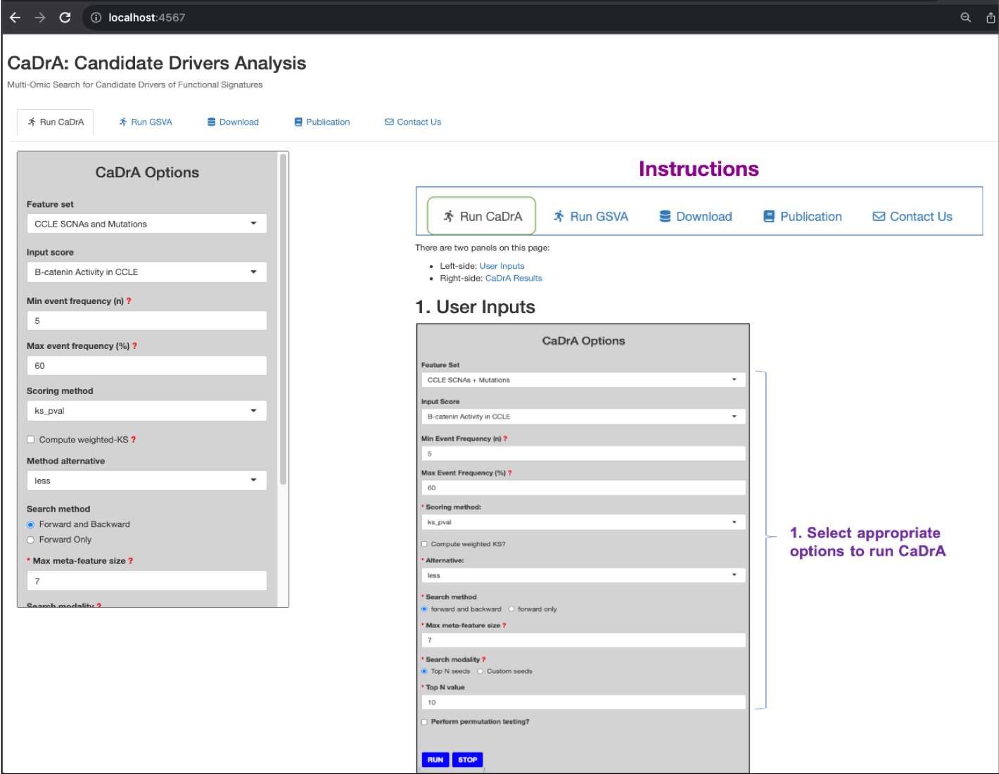

Don’t have Git installed, see Git Guides
Don’t have Docker installed, see Docker Engine
CaDrA.shiny
CaDrA.shiny container with its built image
docker run \
-v /path/to/CaDrA.shiny:/CaDrA.shiny \
-v /path/to/CaDrA.shiny/inst/extdata:/CaDrA.shiny/inst/extdata \
-p 4567:3838 --name cadra.shiny \
-d cadra.shiny:latest -v: mount code base or data files from
host directory to container directory
[host_div]:[container_dir]. -p: map host port to container port
[host_port]:[container_port] --name: give an identity to the container
-d: run container in detached mode
For more information about the Docker syntax, see Docker run reference
NOTE:
CaDrA.shiny directory. This directory contains the code
base of CaDrA.shiny needed to build its Shiny dashboard.
CaDrA.shiny/inst/extdata directory. In this
directory, you can place any external data files (e.g. feature sets,
gene expression sets, input scores, etc.) in which you would like to
populate the CaDrA.shiny dashboard with. However, a
datalist.csv or datalist.RDS must be provided
at the root of the directory including names and paths of where to
import these data files into CaDrA.shiny dashboard.
datalist.csv or datalist.RDS must
contain the following fields:| Fields | Description | Values |
|---|---|---|
| feature_set_name | Alias name for a feature set |
Required. e.g. TCGA_ACC_2016_01_28_GISTIC_MUT_SIG |
| feature_set_path | Absolute path to a feature set file. File format: csv or rds. |
Required. e.g. /CaDrA.shiny/inst/extdata/feature_set/TCGA_ACC_2016_01_28_GISTIC_MUT_SIG.rds |
| input_score_name | Alias name for an input score | Optional. |
| input_score_path | Absolute path to an input score file. File format: csv or rds. | Optional. |
| gene_expression_name | Alias name for a gene expression set | Optional. |
| gene_expression_path | Absolute path to a gene expression set file. File format: csv or rds. | Optional. |
An example of datalist.csv:
| feature_set_name | feature_set_path | input_score_name | input_score_path | gene_expression_name | gene_expression_path |
|---|---|---|---|---|---|
| CCLE SCNAs and Mutations | /CaDrA.shiny/inst/extdata/CCLE_MUT_SCNA.rds | B-catenin Activity in CCLE | /CaDrA.shiny/inst/extdata/CTNBB1_reporter.rds | ||
| TCGA BrCa SCNAs and Mutations | /CaDrA.shiny/inst/extdata/BRCA_GISTIC_MUT_SIG.rds | YAP/TAZ Activity in TCGA BrCa | /CaDrA.shiny/inst/extdata/TAZYAP_BRCA_ACTIVITY.rds | ||
| Simulated Feature Set | /CaDrA.shiny/inst/extdata/sim_FS.rds | Simulated Input Score | /CaDrA.shiny/inst/extdata/sim_Scores.rds |
IMPORTANT NOTE: Since Docker does not have direct
access to the host machine, we must list each data file in its absolute
path as referenced to its mounted directory inside the container
(e.g. /CaDrA.shiny/inst/extdata) not the host
directory.
docker ps
CONTAINER ID IMAGE COMMAND CREATED STATUS PORTS NAMES
b37b6b19c4e8 cadra.shiny:latest "/bin/bash -c /user/..." 5 hours ago Up 5 hours 0.0.0.0:4567->3838/tcp cadra.shinyBased on the output above, the cadra.shiny dashboard is
published on port 4567 on the host machine, and
3838 is the port of where the cadra.shiny
is published inside the Docker container. Noted that all requests that
are made to the host machine will be automatically redirected to the
Docker container where the Shiny app is launched and deployed.
CaDrA.shiny dashboard on your localhost
Using your preferred web browser, type in http://localhost:4567 and
see if CaDrA.shiny dashboard is indeed hosted there.

Any questions or issues? Please report them on our github issues.